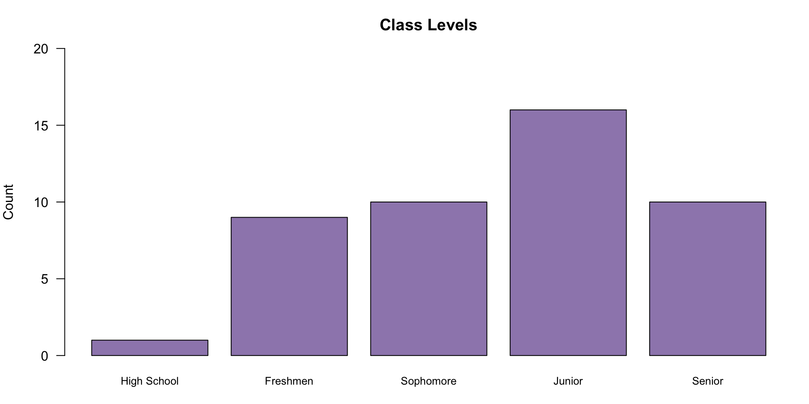

Biometrics I
STAT 240 - Fall 2025
Welcome
About me
Robert Sholl
- Graduate Teaching and Research Assistant, Department of Statistics
- Kansas Water Institute Research Fellow
- Find out more at my academic website
Meet the TA
Phoebe B. McKay
- Distinguished Feline
- Hobbyist spider hunter
- Aspiring model
- Wild cat
About you

About you
Admin Stuff
What is this course?
- Introductory stats for the biological sciences
- (Ideally) comprehensive enough to be your last stats class
- Broad enough to help you continue learning stats after
- There will be math, arithmetic doesn’t matter
- There’s some programming, none of it is required
Basic logistics
- Class hours: M/W/F 11:30 AM - 12:20 PM
- Come late or leave early, just be respectful
- Attendance isn’t required
- Office hours: M/W 10:20 AM - 11:20 AM
- Use them
- Stat Help Lab: M-F 9 AM - 5 PM
- Starts second week of the semester
- My hours are Friday 9 AM - 11 AM
FAQs
- Are there any pre-requisites?
- No, but high school algebra and biology would be helpful
- Will we use computer programs like Excel or Python?
- I’ll use R, you’re welcome to try it, but the class is taught using “paper and pencil” mathematics
- Is there a required textbook?
- “Yes”, but it’s free. You can find it in Canvas or the course website
Course Overview
Exams
- 3 exams, all of them are “comprehensive”
- In-class, 50 minutes
- Calculator + pencil
- Cheat sheet (front and back)
- All exam and due dates are subject to change
- Exams will cover the material we’ve learned in class
- If I don’t get to it I won’t test on it
Unit Question Banks
- 1 bank for each unit, 50 problems per bank
- Choose 10 and write down your answers
- Work is not required
- Pass/fail — no partial credit
- Turn in worked solutions after any class or during office hours. I’ll provide feedback with no penalty.
Unit Question Banks
- Each correct answer is 1% of your grade, 30% total
- You can complete the remaining 40 per unit for 0.5 points on your exam per question
- You must show all work to get credit
- The extra credit you can get from this is up to 12% of your total grade
- 10 problem answers are due the Friday before the exam
- The remaining 40 problems are due the week of the exam
Final Report
10% of your grade, due 3 weeks before finals
Meant to be a chance to get a “real life” experience with stats
3 options for the report, choose 1
Important
If you’re doing undergraduate research or have a different proposal — talk to me, we can see if that is a viable replacement.
Attend a talk (or conference)
Attend a scientific talk (on or off campus) then write a paper with the following:
2-3 sentences summarizing the talk.
2-3 sentences about how you felt about the talk and the speaker.
1-2 sentences describing anything you learned.
1-2 sentences describing anything you didn’t understand or were unsure about.
2-3 sentences either (a) describing any statistical methods that were used/mentioned or (b) describing any statistical methods that could be applicable to the topic discussed.
Interview a pro
Talk to someone who does research or uses statistics regularly as part of their job. They can be an academic, industry, or government professional. Ask them about their education in statistics, how they use statistics, and how they view statistics in relation to their profession. Summarize the discussion, anything you learned from it, and anything you recognized from this course during the discussion in 4-8 sentences at most.
Perform an analysis
Using R programming, complete an analysis of either (a) pre-selected data provided in Canvas or (b) outside data you selected that has been approved by the instructor. The analysis should include:
All basic summary statistics discussed during the course.
At least two graphics from class.
A linear model or hypothesis test
Provide all your source code, with every line of code commented, and a brief statement about what can be concluded from the analysis.
Course learning objectives
By the end of this course, students will have a basic grasp of:
Graphical tools for data analysis
Sampling methods for observational studies
The design of experiments
Probability and distribution theory
Simple linear regression
Uncertainty quantification
t-tests for statistical hypotheses
How to Succeed
My philosophy on grades
You have to set the pace
Do the readings before class
Come to class with questions
Follow along when I work on exercises/problems
Do every question in the 3 unit question banks
Start thinking about your final report now
- Start doing it in 4 weeks
Grading
| Item | Percentage |
|---|---|
| Unit 1 Problems | 10% |
| Unit 2 Problems | 10% |
| Unit 3 Problems | 10% |
| Final Report | 10% |
| Exam 1 | 20% |
| Exam 2 | 20% |
| Exam 3 | 20% |
| Total | 100% |
Communication
During business hours I will response to emails or Canvas messages within 2 business days at most, this includes messages sent outside of business hours. Response times will vary throughout the semester. If I have not responded within 2 business days feel free to contact me again or approach me directly after class/during office hours.
Full class communications will occur via Canvas and in-class announcements.
AI and Academic Dishonesty
- Cheating is an economic issue, talk to me and we can work on a solution
- If you cheat I will take it out on you (give you an incomplete and make you run it back)
- The syllabus outlines my AI policy in detail
- Don’t use AI to replace knowledge work
- If you don’t know whether or not you’re doing that talk to me
AI and Academic Dishonesty
- This is your one of your last chances to learn as a profession
- Trust me, it’s not the same when you’re out in the real world
- I can’t stop you, and if I don’t catch you good job
- Just don’t cheat.
Why Statistics?
Sampling from Populations
Sampling from Populations
Sampling from Populations
- This sample arises from “Date Psychology”, which is two people named Alexander and Caitlin
“Alexander holds a MSc in Cognitive and Behavioral Neuroscience and a BA in Psychology, summa cum laude. Caitlin holds a BA in Psychology, cum laude. Together they share interests in human behavior, cognitive psychology, neuroscience, and romantic relationships.”
Sampling from Populations
Study design was a “forced choice” survey of \(74\) hobbies
Women were asked if the hobby was attractive or not
Men were asked if they thought the hobby was attractive to women or not
Self reported study limitations
Convenience sample, \(814\) participants, \(48\%\) women
\(45\%\) of of women held a Master’s or higher
\(>90\%\) white respondents
‘…we don’t expect much political ideological bias.’
Prediction
On July \(30^{th}\) this year the sixth largest recorded earthquake hit the east coast of Russia and triggered a tsunami that caused \(>2\) million people to be evacuated from Pacific coastlines worldwide. There was \(1\) recorded death due to these events.
Under-studied field, there’s data on earthquakes and tsunamis but not a lot for extreme events
High magnitude earthquakes tend to result in tsunamis
- Tsunamis are bad
Can we predict the wave height?
Prediction
Prediction
Prediction
Prediction
Prediction
Prediction
Prediction
Prediction
Probability
Norovirus is the leading cause of gastroenteritis worldwide. It has a terrifying rate of transmission and outbreaks often occur during densely packed social events/gatherings. Anywhere theres frequent direct contact between large groups of people in an enclosed environment, there’s norovirus.
The perfect environment for norovirus outbreaks?
Cruise ships
The CDC tracks cruise ship norovirus cases separately as part of the Vessel Sanitation Program (VSP)
What are the chances you get sick if you get on a cruise ship?
Probability
Probability
Probability
Probability
Probability
Uncertainty
Like any good math class, we need to check our work.
Are any of these conclusion right?
What can we define as right?
If they’re right, how certain are we?
If they’re wrong, how wrong are they?
- How certain of that are we?
What do we do in either case?